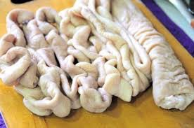
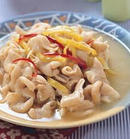

2. 薑切絲，蒜頭與辣椒切片，酸菜洗淨去除鹹味切絲備用。
3. 下油、薑絲、酸菜心略炒煸香。
4. 下蒜頭、辣椒、大腸、水、黃豆醬、糖、米酒調味。
起鍋。
 
蔥爆牛肉介紹 荷包蛋介紹 焢肉飯介紹 心得
練習 影片 音樂
Your browser does not support the audio element. Your browser does not support the video tag.